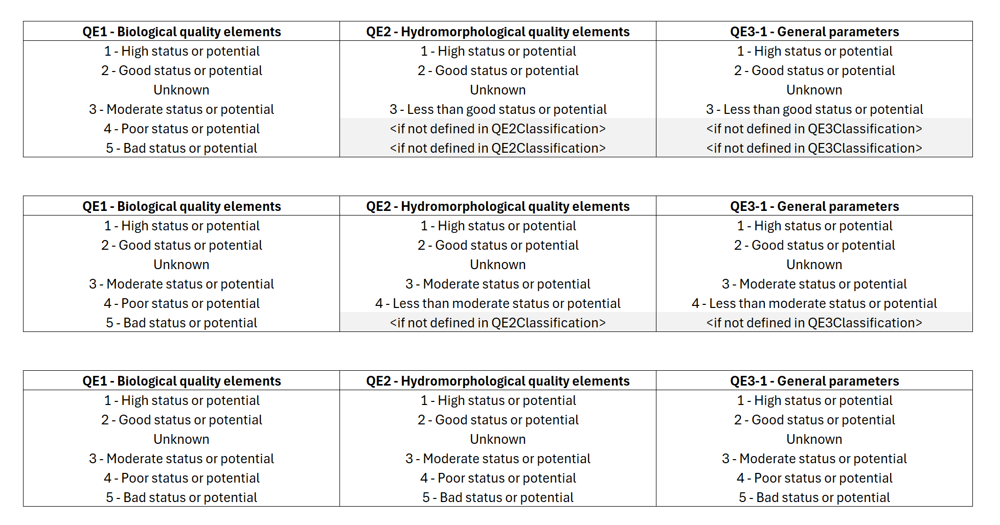
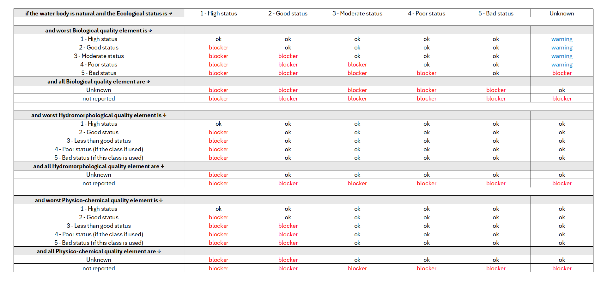
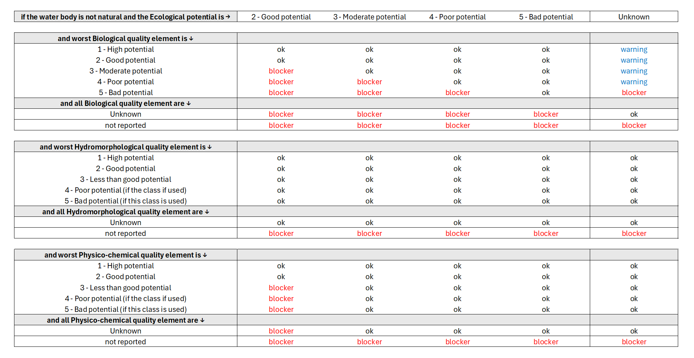
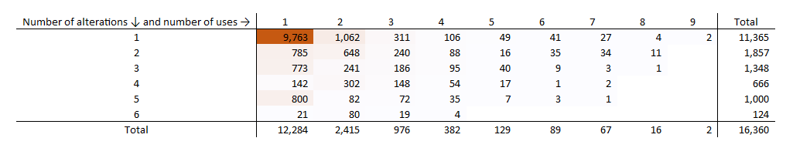

Surface water bodies#
Warning
Updated: 2026-08-25
Added the SWChemicalExemption and SWEcologicalExemption table to the descriptive dataset.
Corrected the dcMetadata table diagram and description.
Updated: 2026-07-27
Renamed the SWCharacterisation table to avoid collisions.
Added the overview diagram
Added the documents dataset
Updated: 2026-07-16
Added the quality control conditions for quality elements, including cross-checks
Added the quality control conditions for national types, including cross-checks
Updated: 2026-07-08
Descriptive dataset - 4th cycle Removal of swIntercalibrationType from SurfaceWaterBody
Ecological status and potential:
Added QC checks.SWQualityElement table:
Clarifying the link with the SWType table. Removal of QE1-2 and QE1-5 from the biological quality elements.
Purpose and overview#
This section revises the reporting of information related to Surface Water Bodies in the 2nd and 3rd cycle of reporting of the Water Framework Directive River Basin Management Plans. It also presents a proposal for simplifying the electronic reporting in the 4th cycle.
Current structure - 3rd cycle#
The information about Surface water bodies was reported in five separate schemas:
the SWB_2022 schema, containing information about each surface water body (Figure 53)
the SWMET_2022 schema, containing information about the methodologies (see Surface water methodologies)
the GML_SurfaceWaterBody_2022 schema and GML_SurfaceWaterBodyLine_2022 schema, containing the SurfaceWaterBody spatial dataset.
the GML_SurfaceWaterBodyCentreline_2022 schema, containing the ancillary SurfaceWaterBodyCentreline spatial dataset.
%%{init: {'theme': 'default'}}%%
classDiagram
class SWChemicalExemptionType ["«XSDcomplexType»
SWChemicalExemptionType"] {
«XSElement»
+ swChemicalExemptionType: ExemptionType_Enum
+ swChemicalExemptionPressure: SignificantPressureType_Enum
}
class SWPrioritySubstance ["«XSDcomplexType»
SWPrioritySubstance"] {
«XSElement»
+ swPrioritySubstanceCode: PS_Enum
+ swPrioritySubstanceCausingFailure: YesNoUnknownCode_Enum
+ swPrioritySubstanceExceedanceType: EQStandardType_Enum [0..3]
+ swPrioritySubstanceExceedanceInMixingZone: YesNoCode_Enum [0..1]
}
class SWAssociatedProtectedArea ["«XSDcomplexType»
SWAssociatedProtectedArea"] {
«XSElement»
+ euProtectedAreaCode: FeatureUniqueEUCodeType
+ protectedAreaType: ProtectedAreaType_Enum
+ protectedAreaObjectivesSet: ProtectedAreaObjectivesEnum [0..1]
+ protectedAreaObjectivesMet: YesNoInformation_Union_Enum [0..1]
+ protectedAreaComment: String1000Type [0..1]
+ protectedAreaExemption: ExemptionType_Enum [1..*]
}
class QualityElement ["«XSDcomplexType»
QualityElement"] {
«XSElement»
+ qeCode: StatusQE_Enum
+ qeStatusOrPotentialValue: QEStatusCode_Enum
+ qeMonitoringResults: MonitoringResults_Enum [0..1]
+ qeMonitoringPeriod: YearRangeType [0..1]
+ qeGrouping: FeatureUniqueEUCodeType [0..*]
+ qeStatusOrPotentialChange: ValueQEX_StatusOrPotentialChange_Enum
+ qeStatusOrPotentialComparability: SoPComparability_Enum [0..1]
+ qeEcologicalExemptionType: ExemptionType_Enum [1..*]
}
class FailingRBSP ["«XSDcomplexType»
FailingRBSP"]{
«XSElement»
+ failingRBSP: RBSP_Enum
+ failingRBSPOther: OtherType [0..1]
}
class SWEcologicalExemptionType ["«XSDcomplexType»
SWEcologicalExemptionType"] {
«XSElement»
+ swEcologicalExemptionType: ExemptionType_Enum
+ swEcologicalExemptionPressure: SignificantPressureType_Enum
}
class SurfaceWaterBody ["«XSDcomplexType»
SurfaceWaterBody"] {
«XSElement»
+ euSurfaceWaterBodyCode: FeatureUniqueEUCodeType
+ euSubUnitCode: FeatureUniqueEUCodeType
+ surfaceWaterBodyCategory: SWCategoryCode_Enum
+ naturalAWBHMWB: NaturalCode_Enum
+ hmwbWaterUse: HMWBWaterUse_Enum [0..*]
+ hmwbPhysicalAlteration: HMWBPhysicalAlteration_Enum [0..*]
+ reservoir: YesNoUnclearReservoir_Enum [0..1]
+ surfaceWaterBodyTypeCode: String100Type
+ surfaceWaterBodyIntercalibrationType: SWIntercalibrationType_Enum [1..*]
+ surfaceWaterBodyTransboundary: YesNoNotApplicable_Union_Enum
+ swSignificantPressureType: SignificantPressureType_Enum [1..*]
+ swPressureOther: String1000Type [0..1]
+ swSignificantImpactType: SignificantImpactType_Enum [1..*]
+ swSignificantImpactOther: String1000Type [0..1]
+ swEcologicalStatusOrPotentialValue: EcologicalStatusCode_Enum
+ swEcologicalAssessmentYear: YearRangeType
+ swEcologicalAssessmentConfidence: Confidence_Enum
+ swEcologicalStatusOrPotentialExpectedAchievementDate: GoodStatus_Enum
+ swChemicalStatusValue: StatusCode_Enum
+ swChemicalAssessmentYear: YearRangeType
+ swChemicalAssessmentConfidence: Confidence_Enum
+ swChemicalMonitoringResults: ChemicalMonitoringResults_Enum [0..1]
+ swChemicalStatusGrouping: FeatureUniqueEUCodeType [0..*]
+ swChemicalStatusExpectedAchievementDate: GoodStatus_Enum
+ swMixingZones: YesNoNoInformation_Union_Enum
+ swMixingZonesProportion: NumberPercentageType [0..1]
}
class SWB {
["«XSDcomplexType»
SWB"]
«XSElement»
+ countryCode: CountryCode_Enum
+ euRBDCode: FeatureUniqueEUCodeType
}
SWChemicalExemptionType --> SWPrioritySubstance : SWChemicalExemptionType
SWPrioritySubstance --> SurfaceWaterBody : SWPrioritySubstance
SWAssociatedProtectedArea --> SurfaceWaterBody : SWAssociatedProtectedArea
QualityElement --> SurfaceWaterBody : QualityElement
FailingRBSP --> SurfaceWaterBody : FailingRBSP
SWEcologicalExemptionType --> SurfaceWaterBody : SWEcologicalExemptionType
SurfaceWaterBody --> SWB : SurfaceWaterBody
Figure 53 Class diagram for the SWB_2022 schema in the 3rd cycle of reporting.#
SWB_2022 schema - 3rd cycle#
The SWB_2022 schema was already partially revised with regard to the reporting of exemptions. See:
Other simplifications already discussed also apply to the revision of the SWB schema:
Removal of the textual reporting of “other” pollutants or RBSPs
Removal of the textual reporting of “other” pressures
Removal of the textual reporting of “other” impacts
Removal of the reporting of subunits
Figure 54 shows a simplified diagram to help focus the discussion on the remaining issues.
%%{init: {'theme': 'default'}}%%
classDiagram
class SWPrioritySubstance {
+ swPrioritySubstanceCode: PS_Enum
+ swPrioritySubstanceCausingFailure: YesNoUnknownCode_Enum
+ swPrioritySubstanceExceedanceType: EQStandardType_Enum [0..3]
+ swPrioritySubstanceExceedanceInMixingZone: YesNoCode_Enum [0..1]
}
class FailingRBSP {
+ failingRBSP: RBSP_Enum
}
class QualityElement {
+ qeCode: StatusQE_Enum
+ qeStatusOrPotentialValue: QEStatusCode_Enum
+ qeMonitoringResults: MonitoringResults_Enum [0..1]
+ qeMonitoringPeriod: YearRangeType [0..1]
+ qeGrouping: FeatureUniqueEUCodeType [0..*]
+ qeStatusOrPotentialChange: ValueQEX_StatusOrPotentialChange_Enum
+ qeStatusOrPotentialComparability: SoPComparability_Enum [0..1]
}
class SurfaceWaterBody {
+ euSurfaceWaterBodyCode: FeatureUniqueEUCodeType
+ surfaceWaterBodyCategory: SWCategoryCode_Enum
+ naturalAWBHMWB: NaturalCode_Enum
+ hmwbWaterUse: HMWBWaterUse_Enum [0..*]
+ hmwbPhysicalAlteration: HMWBPhysicalAlteration_Enum [0..*]
+ reservoir: YesNoUnclearReservoir_Enum [0..1]
+ surfaceWaterBodyTypeCode: String100Type
+ surfaceWaterBodyIntercalibrationType: SWIntercalibrationType_Enum [1..*]
+ surfaceWaterBodyTransboundary: YesNoNotApplicable_Union_Enum
+ swSignificantPressureType: SignificantPressureType_Enum [1..*]
+ swSignificantImpactType: SignificantImpactType_Enum [1..*]
+ swEcologicalStatusOrPotentialValue: EcologicalStatusCode_Enum
+ swEcologicalAssessmentYear: YearRangeType
+ swEcologicalAssessmentConfidence: Confidence_Enum
+ swChemicalStatusValue: StatusCode_Enum
+ swChemicalAssessmentYear: YearRangeType
+ swChemicalAssessmentConfidence: Confidence_Enum
+ swChemicalMonitoringResults: ChemicalMonitoringResults_Enum [0..1]
+ swChemicalStatusGrouping: FeatureUniqueEUCodeType [0..*]
+ swMixingZones: YesNoNoInformation_Union_Enum
+ swMixingZonesProportion: NumberPercentageType [0..1]
}
SWPrioritySubstance --> SurfaceWaterBody : SWPrioritySubstance
FailingRBSP --> SurfaceWaterBody : FailingRBSP
QualityElement --> SurfaceWaterBody : QualityElement
Figure 54 PARTIAL class diagram for the SWB_2022 schema in the 3rd cycle of reporting.#
Proposed structure - 4th cycle#
For the 4th cycle of reporting, the proposed structure combines into a single dataflow (see Figure 55) the information related to surface water:
Note that, if there are changes since the 3rd cycle, the national spatial data related to river basin districts must be reported before it can be referenced to in the surface water dataflow tables.
---
config:
class:
hideEmptyMembersBox: true
layout: dagre
theme: neutral
themeVariables:
noteBkgColor: LightYellow
noteTextColor: black
---
classDiagram
direction LR
namespace DescriptiveDataset {
class SWPressureImpact{}
class SWHeavilyModifiedWaterBody{}
class SWCharacterisation{}
class SWStatus{}
class SWQualityElement{}
class SWGrouping{}
class SWPollutant{}
class SWEcologicalExemption{}
class SWChemicalExemption{}
}
namespace SpatialDataset {
class SurfaceWaterBody{}
}
namespace MethodologiesDataset {
class SWMethodologies{}
class SWManagementObjectives{}
class SWChemicalStatusClassification{}
class SWTargetedQuestions{}
class SWPressureAssessment{}
class SWThresholdValue{}
class SWThreshold_SWType{}
class SWType{}
class SWNaturalBackgroundLevel{}
class QE1Classification{}
class QE2Classification{}
class QE3Classification{}
class QEClassification_SWType{}
class BQEMethod{}
}
namespace DocumentsData {
class dcMetadata{}
class Reference{}
class Document{}
}
namespace ReferenceDataset {
class RiverBasinDistrict_4thCycle:::otherDataset{
}
class SurfaceWaterBody_3rdCycle:::otherDataset{
}
}
SWHeavilyModifiedWaterBody "0..n" -- SWCharacterisation
SWCharacterisation "1" -- "1" SWStatus
SWStatus "1" -- "0..1" SWQualityElement
SWStatus "1" -- "0..n" SWPollutant
SWStatus "1" -- "0..n" SWPressureImpact
SWQualityElement "1" -- "0..n" SWEcologicalExemption
SWPollutant "1" -- "0..n" SWChemicalExemption
SWThresholdValue -- "1..n" SWThreshold_SWType
SWThreshold_SWType "1..n" -- SWType
SWNaturalBackgroundLevel "0..n" -- SWType
QE1Classification "n" -- BQEMethod
QE3Classification -- "1..n" QEClassification_SWType
QE1Classification -- "1..n" QEClassification_SWType
QE2Classification -- "1..n" QEClassification_SWType
QEClassification_SWType "1..n" -- SWType
SWPollutant ..> SWGrouping
SWQualityElement ..> SWGrouping
SWQualityElement ..> QE1Classification
SWQualityElement ..> QE2Classification
SWQualityElement ..> QE3Classification
SurfaceWaterBody ..> SurfaceWaterBody_3rdCycle
SurfaceWaterBody ..> RiverBasinDistrict_4thCycle
SWPollutant ..> SWThresholdValue
SWPressureImpact ..> SWPressureAssessment
SWCharacterisation ..> SurfaceWaterBody
SWMethodologies ..> Reference
SWManagementObjectives ..> Reference
SWChemicalStatusClassification ..> Reference
SWTargetedQuestions ..> Reference
Reference ..> Document
dcMetadata ..> RiverBasinDistrict_4thCycle
dcMetadata ..> Document
classDef default fill:white,stroke:#000;
classDef forFixing fill:white,stroke:#f00;
classDef otherDataset fill:lavender,stroke:#000;
Figure 55 Surface water - overview - 4th cycle#
Descriptive dataset - 4th cycle#
The proposed structure for the 4th cycle electronic reporting is presented in the class diagram in (Figure 56) and a brief description of each table is included in Table 46.
---
config:
class:
hideEmptyMembersBox: true
layout: dagre
theme: neutral
---
classDiagram
direction TB
class SurfaceWaterBody {
+ euSurfaceWaterBodyCode: wiseIdentifier
+ surfaceWaterBodyCategory: WaterBodyCategory
+ naturalAWBHMWB: NaturalAWBHMWB
+ swTypeIdentifier: wiseIdentifier
+ surfaceWaterBodyTransboundary: YesNo
+ reservoir: ReservoirType
+ swMixingZonesProportion: PercentageInterval
}
class SWStatus {
+ euSurfaceWaterBodyCode: wiseIdentifier
+ swEcologicalStatusOrPotentialValue: EcologicalStatus
+ swChemicalStatusValue: ChemicalStatus
}
class SWPollutant {
+ euSurfaceWaterBodyCode: wiseIdentifier
+ swPollutantCode: Parameter
+ swPollutantCausingFailure: YesNoUnknown
+ swThresholdExceedance: wiseIdentifier [0..n]
+ swPollutantExceedanceInMixingZone: YesNoUnknownNotApplicable
+ swPollutantAssessmentPeriod: range
+ swPollutantAssessmentMethod: AssessmentMethod [1..n]
+ swPollutantAssessmentConfidence: AssessmentConfidence
+ swThresholdIdentifier: wiseIdentifier [1..n]
+ swGroupingIdentifier: wiseIdentifier [0..n]
}
class SWPressureImpact {
+ euSurfaceWaterBodyCode: wiseIdentifier
+ swPressureType: PressureType [0..1]
+ swImpactType: ImpactType [0..1]
}
class SWHeavilyModifiedWaterBody {
+ euSurfaceWaterBodyCode: wiseIdentifier
+ hmwbPhysicalAlteration: HMWBPhysicalAlteration [0..n]
+ hmwbWaterUse: HMWBWaterUse [0..n]
}
class SWQualityElement{
+ euSurfaceWaterBodyCode: wiseIdentifier
+ qeCode: QualityElement
+ qeStatusOrPotentialValue: EcologicalStatus
+ qeStatusAssessmentPeriod: range
+ qeStatusAssessmentMethod: AssessmentMethod [1..n]
+ qeStatusAssessmentConfidence: AssessmentConfidence
+ qeClassificationIdentifier: wiseIdentifier [1..n]
+ swGroupingIdentifier: wiseIdentifier [0..n]
}
class SWGrouping{
+ swGroupingIdentifier: wiseIdentifier
+ euSurfaceWaterBodyCode: wiseIdentifier
}
SWHeavilyModifiedWaterBody "0..n" -- "1" SurfaceWaterBody
SurfaceWaterBody "1" -- "1" SWStatus
SWStatus "1" -- "0..n" SWQualityElement
SWStatus "1" -- "0..n" SWPressureImpact
SWStatus "1" -- "0..n" SWPollutant
SWQualityElement ..> SWGrouping: swGroupingIdentifier
SWPollutant ..> SWGrouping: swGroupingIdentifier
classDef default fill:white,stroke:#000;
classDef forFixing fill:white,stroke:#f00;
classDef otherDataset fill:lightyellow,stroke:#000;
Figure 56 Surface water - 4th cycle#
Table |
Description |
|---|---|
SurfaceWaterBody |
modified |
SWHeavilyModifiedWaterBody |
modified |
SWStatus |
new Formally, the Likewise, the |
SWPollutant |
modified |
SWQualityElement |
new |
SWGrouping |
new The |
SWPressureImpact |
modified. For water bodies that do not achieve good chemical status in 2027,
the significant pressures are reported in the For cases where a pressure is not causing failure,
but still causes an impact that needs to be managed,
the Note that the reporting of pressures and impacts
is combined into a single |
SWEcologicalExemption |
modified. |
SWChemicalExemption |
modified. |
The following conditions apply:
If a surface water body belongs to a given national type, then the surface water body category must match in the SurfaceWaterBody table and in the SWType table. The following cases will trigger a blocker:
SELECT t.euSurfaceWaterBodyCode, t.swTypeIdentifier FROM SurfaceWaterBody AS t JOIN SWType AS ref ON t.swTypeIdentifier = ref.swTypeIdentifier WHERE t.surfaceWaterBodyCategory <> ref.surfaceWaterBodyCategory
If a surface water body belongs to a given national type, then the water body type must match in the SurfaceWaterBody table and in the SWType table. The following cases will trigger a blocker:
SELECT t.euSurfaceWaterBodyCode, t.swTypeIdentifier FROM SurfaceWaterBody AS t JOIN SWType AS ref ON t.swTypeIdentifier = ref.swTypeIdentifier WHERE NOT (t.naturalAWBHMWB = ANY(string_to_array(t.naturalAWBHMWB, ';')))
Ecological status and potential#
The quality control criteria have been defined, and will be refined as needed.
The ecological status must be reported for all surface water bodies, except territorial waters. The following clause will raise a blocker:
SurfaceWaterBody.surfaceWaterBodyCategory != 'TeW' AND swEcologicalStatusOrPotentialValue = 'notApplicable'High ecological status is only defined for natural water bodies. The following clause will raise a blocker:
SurfaceWaterBody.naturalAWBHMWB != 'natural' AND swEcologicalStatusOrPotentialValue = '1'If ecological status is high, the status of all applicable quality elements must all be high. The following clause will raise a blocker:
SWStatus.swEcologicalStatusOrPotentialValue = '1' AND qeStatusOrPotentialValue in ('2','3','4','5')If ecological status is high, the status of all applicable quality elements must all be high. The following clause will raise a blocker:
SWStatus.swEcologicalStatusOrPotentialValue = '1' AND qeStatusOrPotentialValue in ('2','3','4','5')If ecological status is high, at least one hydromorphological quality element (QE2%) must be assessed.
If ecological status is high, at least one physico-chemical quality element (QE3%) must be assessed.
If ecological status is good or maximum, the status of all applicable biological quality elements must be at least good or maximum. The following clause will raise a blocker:
swEcologicalStatusOrPotentialValue = '2' AND qeCode LIKE 'QE1%' AND qeStatusOrPotentialValue in ('3','4','5')If ecological status is good or maximum, the status of all applicable physico-chemical quality elements must be at least good or maximum. The following clause will raise a blocker:
swEcologicalStatusOrPotentialValue = '2' AND qeCode LIKE 'QE3%' AND qeStatusOrPotentialValue in ('3','4','5')If ecological status is moderate, the status of all applicable biological quality elements must be at least moderate. The following clause will raise a blocker:
swEcologicalStatusOrPotentialValue = '3' AND qeCode LIKE 'QE1%' AND qeStatusOrPotentialValue in ('4','5')If ecological status is poor, the status of all applicable biological quality elements must be at least poor. The following clause will raise a blocker:
swEcologicalStatusOrPotentialValue = '5' AND qeCode LIKE 'QE1%' AND qeStatusOrPotentialValue in ('5')If all applicable quality elements have ‘unknown’ status, then the ecological status must also be ‘unknown’.
The diagram below, adapted from Figure 1 in the CIS Guidance Document 13, illustrates the assessment criteria for ecological status (Figure 57).
---
config:
layout: dagre
---
flowchart LR
title@{ shape: braces, label: "CIS Guidance document 13, Figure 1" }
%% Defining the nodes
initial([start])
final([end])
High["High status"]:::Blue
Good["Good status"]:::Green
Moderate["Moderate status"]:::Yellow
Poor["Poor status"]:::Orange
Bad["Bad status"]:::Red
is_BQE_High{"Do the <br/>estimated values <br/>for the biological quality elements <br/>meet reference conditions?"}
is_BQE_Good{"Do the <br/>estimated values <br/>for the biological quality elements <br/>deviate only slightly <br/>from reference condition values?"}
is_PhysChemQE_High{"Do the <br/>physico-chemical conditions <br/>meet high status?"}
is_PhysChemQE_Good{"Do the <br/>physico-chemical conditions <br/>ensure ecosystem functioning?"}
is_HyMoQE_High{"Do the <br/>hydro-morphological conditions<br/> meet high status?"}
ClassifyUsingBQEOnly["Classify <br/>on the basis of the <br/>biological deviation <br/>from reference conditions"]
is_BQE_Moderate{"Is the <br/>deviation moderate?"}
is_BQE_Poor{"Is the <br/>deviation large?"}
%% Flow
initial --> is_BQE_High
is_BQE_High ====> |Yes|is_PhysChemQE_High
is_PhysChemQE_High ==>|Yes|is_HyMoQE_High
is_HyMoQE_High ==>|Yes| High
High --> final
is_HyMoQE_High ==> |No|Good
is_PhysChemQE_High ==>|No|is_PhysChemQE_Good
is_BQE_High ==>|No|is_BQE_Good
is_BQE_Good ==>|Yes|is_PhysChemQE_Good
is_BQE_Good ==>|No|ClassifyUsingBQEOnly
is_PhysChemQE_Good ==>|Yes|Good
Good --> final
is_PhysChemQE_Good ==>|No|ClassifyUsingBQEOnly
ClassifyUsingBQEOnly ==> is_BQE_Moderate
is_BQE_Moderate ==>|Yes|Moderate
Moderate --> final
is_BQE_Moderate ==>|No|is_BQE_Poor
is_BQE_Poor ==>|Yes|Poor
Poor --> final
is_BQE_Poor ==>|Extreme deviation|Bad
Bad --> final
%% styling
classDef state stroke-width:4px,fill:transparent
classDef Blue fill:#5893A9,stroke:black;
classDef Green fill:#6FB22C,stroke:black;
classDef Yellow fill:#FFF6A6,stroke:black;
classDef Orange fill:#F6A800,black;
classDef Red fill:#E63D5C,black;
Figure 57 Surface Water Body - Ecological status assessment#
The diagram below, adapted from Figure 2 in the CIS Guidance document 13, illustrates the assessment criteria for ecological potential (Figure 58).
---
config:
layout: dagre
---
flowchart LR
title@{ shape: braces, label: "CIS Guidance document 13, Figure 2" }
%% Defining the nodes
initial([start])
final([end])
Good["Good and above potential"]:::Green
Moderate["Moderate potential"]:::Yellow
Poor["Poor potential"]:::Orange
Bad["Bad potential"]:::Red
is_HyMoQE_Good{"Do the <br/>hydro-morphological conditions <br/>meet maximum ecological potential?"}
is_BQE_High{"Do the <br/>estimated values <br/>for the biological quality elements <br/>meet maximum ecological potential conditions?"}
is_BQE_Good{"Do the <br/>estimated values <br/>for the biological quality elements <br/>deviate only slightly from maximum ecological potential values?"}
is_PhysChemQE_High{"Do the <br/>physico-chemical conditions <br/>meet maximum ecological potential?"}
is_PhysChemQE_Good{"Do the <br/>physico-chemical conditions <br/>ensure ecosystem functioning?"}
ClassifyUsingBQEOnly["Classify <br/>on the basis of the <br/>biological deviation <br/>from maximum ecological potential conditions"]
is_BQE_Moderate{"Is the <br/>deviation moderate?"}
is_BQE_Poor{"Is the <br/>deviation large?"}
%% Flow
initial --> is_HyMoQE_Good
is_HyMoQE_Good ==> |Yes|is_BQE_High
is_BQE_High ====> |Yes|is_PhysChemQE_High
is_PhysChemQE_High ==>|Yes|Good
is_PhysChemQE_High ==>|No|is_PhysChemQE_Good
is_PhysChemQE_Good ==>|Yes|Good
is_HyMoQE_Good ==> |No|is_BQE_Good
is_BQE_High ==>|No|is_BQE_Good
is_BQE_Good ==>|Yes|is_PhysChemQE_Good
Good --> final
is_PhysChemQE_Good ==>|No|Moderate
is_BQE_Good ==>|No|ClassifyUsingBQEOnly
ClassifyUsingBQEOnly ==> is_BQE_Moderate
is_BQE_Moderate ==>|Yes|Moderate
Moderate --> final
is_BQE_Moderate ==>|No|is_BQE_Poor
is_BQE_Poor ==>|Yes|Poor
Poor --> final
is_BQE_Poor ==>|Extreme deviation|Bad
Bad --> final
%% styling
classDef state stroke-width:4px,fill:transparent
classDef Blue fill:#5893A9,stroke:black;
classDef Green fill:#6FB22C,stroke:black;
classDef Yellow fill:#FFF6A6,stroke:black;
classDef Orange fill:#F6A800,black;
classDef Red fill:#E63D5C,black;
Figure 58 Surface Water Body - Ecological potential assessment#
SWQualityElement table#
The data reported in the SWType table
controls the data that must be reported
in the SWQualityElement table
(see SWType table).
It is no longer required to report the status of all quality elements. Only the status of the applicable quality elements is reported.
The allowable
qeCodevalues are presented in Figure 66.The option
'QE1-2'(Other aquatic flora), which existed in the 3rd cycle, is no longer included.The
SWQualityElementdata is not reported for territorial waters, i.e. for water bodies wheresurfaceWaterBodyCategory = 'TeW'
Figure 59 illustrates the reporting of quality element status:
the upper table show the range of allowable values in the 3rd cycle
the middle table illustrates the possibility to use a ‘4 - Less than moderate status or potential’ class also for hydromorphological and physico-chemical elements
the middle table illustrates the possibility to use the classes ‘4 - Poor status or potential’ and ‘5 - Bad status or potential’ for any quality element.
The following conditions apply:
For the hydromorphological quality elements, the values
'4'and'5'can be used if and only if they have been defined in theQE2Classificationtable, for the correspondingqeClassificationIdentifier.For the physico-chemical quality elements, the values
'4'and'5'can be used if and only if their respective ranges have been defined in theQE3Classificationtable, for the correspondingqeClassificationIdentifier.
{kind=link}

Figure 59 Reporting quality element status – 4th cycle.#
Figure 60 illustrates the quality control between the status at quality element level and the overall ecological status at water body level, for natural water bodies.
The quality control will verify if the ecological status is consistent with the “one-out-all-out” principle. Some examples:
if all applicable biological quality elements have
qeStatusOrPotentialValue = '1'and all applicable hydromorphological quality elements haveqeStatusOrPotentialValue = '2'and a natural water body hasswEcologicalStatusOrPotentialValue = '1', then a quality control blocker will be raised.if worst applicable applicable biological quality element has
qeStatusOrPotentialValue = '5', and a natural water body hasswEcologicalStatusOrPotentialValue = 'unknown', then a quality control blocker will be raised.
Note that the quality control does not verify if the reported ecological status at water body level is worse than would be expected by the application of the “one-out-all-out” principle.
{kind=link}

Figure 60 One-out-all-out principle - ecological status vs. quality element status – 4th cycle.#
Figure 61 illustrates the quality control between the potential at quality element level and the overall ecological potential at water body level, for artificial and heavily modified water bodies.
The quality control will verify if the ecological potential is consistent with the “one-out-all-out” principle. Some examples:
if all applicable quality elements have
qeStatusOrPotentialValue = '3'and an artificial water body hasswEcologicalStatusOrPotentialValue = '2', then a quality control blocker will be raised.if all applicable quality elements have
qeStatusOrPotentialValue = 'unknown', and an artificial water body hasswEcologicalStatusOrPotentialValue = 'unknown', then a quality control warning will be raised.
Note that the quality control does not verify if the reported ecological potential at water body level is worse than would be expected by the application of the “one-out-all-out” principle.
{kind=link}

Figure 61 One-out-all-out principle - ecological potential vs. quality element potential – 4th cycle.#
The quality control will also enforce that
a quality element is reported if and only if it is applicable a given national type,
and consistent with what was reported for that national type in the SWType table
(see SWType table).
For example:
If quality element QE1-2-3 is NOT applicable to a given national type, then it must NOT be reported, and the following cases will trigger a blocker:
SELECT t.euSurfaceWaterBodyCode,t.qeCode, ref.swTypeIdentifier, ref.QE1_2_3 FROM SWQualityElement AS t JOIN SurfaceWaterBody AS p ON t.euSurfaceWaterBodyCode = p.euSurfaceWaterBodyCode JOIN SWType AS ref ON p.swTypeIdentifier = ref.swTypeIdentifier WHERE ref.QE1_2_3 IN ('inapplicable','notUsed') AND t.qeCode = 'QE1-2-3'
If quality element QE1-2-3 is applicable to a given national type, then it must be reported for all water bodies of that type, and the following cases will trigger a blocker:
SELECT DISTINCT p.euSurfaceWaterBodyCode, p.swTypeIdentifier FROM SurfaceWaterBody AS p JOIN SWType AS ref ON p.swTypeIdentifier = ref.swTypeIdentifier LEFT JOIN SWQualityElement AS t ON t.euSurfaceWaterBodyCode = p.euSurfaceWaterBodyCode AND t.qeCode = 'QE1-2-3' WHERE ref.QE1_2_3 = 'applicable' AND t.euSurfaceWaterBodyCode IS NULL
Exemptions#
Refer to the documentation about exemptions, specifically:
Methodologies dataset - 4th cycle#
Refer to the Surface water methodologiessection.
Spatial dataset - 4th cycle#
The Spatial dataset contains only the SurfaceWaterBody spatial data
(Figure 62).
The SurfaceWaterBodyCentreline dataset is no longer requested in the 4th cycle of reporting.
---
config:
class:
hideEmptyMembersBox: true
layout: dagre
theme: neutral
---
classDiagram
direction LR
class SurfaceWaterBody {
+ geometry_polygon: MultiPolygon [0..1]
+ geometry_line: MultiLineString [0..1]
+ inspireIdLocalId: string254
+ inspireIdNamespace: string254
+ inspireIdVersionId: string25 [0..1]
+ thematicIdIdentifier: wiseIdentifier
+ thematicIdIdentifierScheme: IdentifierScheme
+ beginLifespanVersion: date [0..1]
+ endLifespanVersion: date [0..1]
+ predecessorsIdentifier: wiseIdentifier [0..n]
+ predecessorsIdentifierScheme: IdentifierScheme [0..1]
+ successorsIdentifier: wiseIdentifier [0..n]
+ successorsIdentifierScheme: IdentifierScheme [0..1]
+ wiseEvolutionType: WiseEvolutionType
+ nameTextInternational: string254
+ nameText: string254
+ nameLanguage: Language
+ designationPeriodBegin: date
+ designationPeriodEnd: date [0..1]
+ zoneType: ZoneType
+ specialisedZoneType: SpecialisedZoneType
+ legalBasisName: string254 [0..1]
+ legalBasisLink: URL [0..1]
+ legalBasisLevel: LegislationLevelValue [0..1]
+ relatedZoneIdentifier: wiseIdentifier
+ relatedZoneIdentifierScheme: IdentifierScheme
+ link: URL [0..1]
}
Figure 62 Spatial dataset - SurfaceWaterBody - 4th cycle#
The following changes have been made to the SurfaceWaterBody spatial table
(in comparison to the 3rd cycle of reporting):
The attributes
sizeValueandsizeUomwere removed, because they can be derived from the reported geometry.The attribute
meanDepthwas removed, due to low frequency of reporting.Two attributes
relatedTransboundaryIdentifierandrelatedTransboundaryIdentifierSchemewere removed, because they are not required at EU level.All the date values are requested as YYYY-MM-DD, because that was the format used by all the data providers in the previous cycles (and therefore it is not necessary to maintain more variants). This applies to
beginLifespanVersion,endLifespanVersion,designationPeriodBegin,designationPeriodEnd.The attributes
successorsIdentifierandsuccessorsIdentifierSchemehave been kept for clarity’s sake. In the reported datasets, the value of these attributes will always be NULL. The appropriate value will be derived and included in the published WISE datasets for the 1st, 2nd and 3rd cycle SurfaceWaterBody datasets.The quality control tests enforced in the 3rd cycle of reporting will continue to be applied in the 4th cycle.
Additionally:
The reporting of territorial waters is mandatory (except for landlocked countries).
All rivers must be reported as line geometries.
Each surface water body must be related to one and only one river basin district (subunits are no longer used in the related zone attributes).
The reporting of objects with
wiseEvolutionType = 'creation'will raise a warning. It is expected that new water bodies result from re-delineation of existing water bodies, and therefore their respective predecessors should be reported.The reporting of objects with
wiseEvolutionType = 'deletion'will raise a error. If a water body is no longer designated as a WFD water body, its catchment area will likely be part of the catchment area of other WFD water bodies and therefore the “deleted” water body should be reported only as a predecessor.
Documents dataset - 4th cycle#
The Documents dataset follows the standard structure used in various WISE dataflows (Figure 63):
The
dcMetadatatable provides the basic Dublin Core metadata elements about the delivery.If required by the data providers, and especially if spatial data is being reported, the
licenseDocumentand themetadataDocumentattributes allow the provision of additional information about the dataset.The
dcMetadatatable also functions as a “manifest file” explaining if the delivery contains data for a given river basin district or not.
The
Documenttable allows the upload of documents (for example, PDFs) or the provision of ahyperlinkto a document stored in a publicly accessible national web site.The
Referencetable is also standard in the WISE dataflows: thebookmarkit allows the identification of the chapter(s), sections(s) or page range(s) where the relevant information about asubjectcan be found within a document.
---
config:
class:
hideEmptyMembersBox: true
layout: dagre
theme: neutral
---
classDiagram
direction LR
class dcMetadata {
«metadata»
+ title: string
+ creatorOrganisationName: string
+ creatorElectronicMailAddress: Email
+ description: string [0..1]
+ created: date [0..1]
+ language: Language [1..n]
+ license: Licence
+ rights: string [0..1]
+ rightsHolder: string [0..1]
+ licenseDocument: documentCode [0..n]
+ metadataDocument: documentCode [0..n]
«manifest»
+ euRBDCode: wiseIdentifier
+ includesSpatialData: YesNo
+ includesDescriptiveData: YesNo
}
class Reference {
+ referenceCode: wiseIdentifier
+ documentCode: documentCode
+ bookmark: string250
+ subject: string250
}
class Document {
+ documentCode: wiseIdentifier
+ documentName: string250
+ hyperlink: URL [0..1]
+ documentFile: Attachment [0..1]
}
class Licence{
<<enumeration>>
CC0
CC_BY_4_0
exactMatch_CC_BY_4_0
narrowMatch_CC_BY_4_0
}
Reference ..> Document: documentCode
dcMetadata ..> Document: licenseDocument
dcMetadata ..> Document: metadataDocument
dcMetadata ..> Licence: license
classDef default fill:white,stroke:#000;
classDef forFixing fill:white,stroke:#f00;
Figure 63 Surface water - 4th cycle - Documents#
The following criteria apply:
The
dcMetadatatable must contain one and only one record for each of the country’s river basin districts, identified by theeuRBDCodevalue.The spatial dataset is national. The
includesSpatialDatavalue must be the same for all river basin districts.If
includesSpatialData = 'no'then no spatial data is expected, and the quality control of the descriptive dataset will run against the last technically accepted delivery of surface water bodies spatial data.For countries reporting under the WFD, the last technically accepted delivery of surface water bodies spatial data is always the data reported in the 3rd cycle.
The descriptive dataset is also national, but the quality control will allow deliveries where some, or all, the river basin districts have
includesDescriptiveData = 'no'.For countries reporting under the WFD, the quality control will raise an ERROR, if some, or all, the river basin districts have
includesDescriptiveData = 'no'.Note that the Methodologies dataset tables must always be reported for the river basin districts where
includesDescriptiveData = 'yes'
Codelists - 4th cycle#
For the
WaterBodyCategorycodelist andNaturalAWBHMWBcodelist see Figure 64.For the
Reservoircodelist, see Figure 65.
All reservoirs must be reported as artificial or heavily modified lakes.See the definitions in Table 47.
For the
HMWBWaterUsecodelist, see Figure 65.
For heavily modified water bodies only, use this codelist to report the water use for which the water body has been designated. According to Art. 4(3) of the WFD, the water use for which a HMWB was designated is the water use that would be affected significantly by the changes that would be necessary to achieve good ecological status.For the
HMWBPhysicalAlterationcodelist, see Figure 65.
For heavily modified water bodies only, use this codelist to report the physical alteration that has resulted in the designation of the surface water body as a HMWB.
In the context of designation as a HMWB, physical alterations means any significant alterations that have resulted in substantial changes to the hydromorphology of a surface water body such that the surface water body is substantially changed in character. In general, these hydromorphological characteristics are long term and alter both the morphological and hydrological characteristics.For the
AssessmentMethodcodelist, see Figure 43.
The codelist is used to report the assessment method for the chemical status and the assessment method for the ecological status.
The same codelist is used for groundwater bodies, to report the assessment method of quantitative status, and the assessment method of chemical status.See the definitions in Table 37.
For the
AssessmentConfidencecodelist, see also Figure 43.
The codelist allow the reporting of the level of confidence in the results of the status assessment The same codelist is used for groundwater bodies.See the definitions in Table 38.
For the
PressureTypecodelist, see Figure 111 in the section PressureType codelist - 4th cycle
---
config:
class:
hideEmptyMembersBox: true
layout: dagre
theme: neutral
---
classDiagram
direction TB
class WaterBodyCategory{
<<enumeration>>
RW - River water body
LW - Lake water body
TW - Transitional water body
CW - Coastal water body
TeW - Territorial waters
}
class NaturalAWBHMWB{
<<enumeration>>
natural
artificial
heavilyModified
}
note for WaterBodyCategory "the label is not part of the code"
classDef default fill:white,stroke:#000;
classDef forFixing fill:white,stroke:#f00;
Figure 64 WaterBodyCategory codelist and NaturalAWBHMWB codelist - 4th cycle#
---
config:
class:
hideEmptyMembersBox: true
layout: dagre
theme: neutral
---
classDiagram
direction TB
class HMWBWaterUse{
<<enumeration>>
widerEnvironment_natureProtection
widerEnvironment_culturalHeritageProtection
transport
tourism
urban_drinkingWaterSupply
agriculture_irrigation
aquaculture
industry_waterSupply
energy_hydropower
energy_nonHydropower
floodProtection
agriculture_landDrainage
urban_other
otherSustainableHumanDevelopmentActivities
unknown
}
class HMWBPhysicalAlteration{
<<enumeration>>
locks
transversalBarrier
longitudinalBarrier
dredging
landReclamation
landDrainage
other
}
class Reservoir{
<<enumeration>>
river
riverAndLake
lake
artificial
notAReservoir
inapplicable
}
classDef default fill:white,stroke:#000;
classDef forFixing fill:white,stroke:#f00;
Figure 65 Reservoir codelist, HMWBWaterUse codelist, and HMWBPhysicalAlteration codelist - 4th cycle#
Notation |
Label |
Definition |
|---|---|---|
river |
Reservoir in former river |
Select this option only if the whole surface water body represents a reservoir (or part of a reservoir) created by damming a river. |
riverAndLake |
Reservoir in former chain of rivers and lakes |
In cases where the reservoir has been created by damming a water body which contained chained rivers and lakes. |
lake |
Reservoir in former lake |
If the whole surface water body represents a reservoir (or part of a reservoir) created by modifying a pre-existing lake, or if the surface water body includes some small reservoirs which are not significant enough to be identified as separate surface water bodies. |
artificial |
Artificial reservoir |
In cases where the reservoir has been created by human activity in a location where no water body existed before, and which has not been created by the direct physical alteration, movement or realignment of an existing water body. |
notAReservoir |
Not a reservoir |
The artificial or heavily modified lake is not a reservoir. |
inapplicable |
Inapplicable |
The water body is not a lake, or is a natural lake. |
Notation |
Label |
Definition |
|---|---|---|
widerEnvironment_natureProtection |
Nature protection |
See Article 4(3)(a)(i) of the WFD. |
widerEnvironment_culturalHeritageProtection |
Cultural heritage protection |
Archaeological sites and patrimony. See Article 4(3)(a)(i) of the WFD. |
transport_navigation |
Transport - Navigation and Ports |
See Article 4(3)(a)(ii) of the WFD. |
tourism |
Tourism and recreation |
See Article 4(3)(a)(ii) of the WFD. |
urban_drinkingWaterSupply |
Urban development - drinking water supply |
Water storage for domestic public water supply (mostly drinking water supply). See Article 4(3)(a)(iii) of the WFD. |
agriculture_irrigation |
Agriculture - irrigation |
Water storage for irrigation. See Article 4(3)(a)(iii) of the WFD. |
aquaculture |
Aquaculture, fisheries, fish farms |
Water storage for aquaculture, fisheries, fish farms. See Article 4(3)(a)(iii) of the WFD. |
industry_waterSupply |
Industry - water supply |
Water storage for industry. See Article 4(3)(a)(iii) of the WFD. |
energy_hydropower |
Energy – hydropower |
Water storage for hydropower generation. See Article 4(3)(a)(iii) of the WFD. |
energy_nonHydropower |
Energy – non-hydropower |
Water storage for power generation. See Article 4(3)(a)(iii) of the WFD. Applicable to cooling activities for thermal and nuclear plants. |
floodProtection |
Flood protection |
See Article 4(3)(a)(iv) of the WFD. |
agriculture_landDrainage |
Agriculture - land drainage |
See Article 4(3)(a)(iv) of the WFD. |
urban_other |
Urban development - other use |
«to be provided» |
otherSustainableHumanDevelopmentActivities |
Other sustainable human development activities |
See Article 4(3)(a)(v) of the WFD. |
unknown |
Unknown |
Unknown use. The selection of this option will trigger an ERROR. |
Click to see the mapping table between 3rd cycle and 4th cycle codes
3rd cycle |
4th cycle |
|---|---|
“Wider environment - nature protection and other ecological uses” |
widerEnvironment_natureProtection |
“Wider environment - nature protection and other ecological uses” |
widerEnvironment_culturalHeritageProtection |
“Transport - navigation / ports” |
transport |
“Tourism and recreation” |
tourism |
“Urban development - drinking water supply” |
urban_drinkingWaterSupply |
“Agriculture - irrigation” |
agriculture_irrigation |
“Storage for fisheries/aquaculture/fish farms” |
aquaculture |
“Industry supply” |
industry_waterSupply |
“Energy - hydropower” |
energy_hydropower |
“Energy - non-hydropower” |
energy_nonHydropower |
“Flood protection” |
floodProtection |
“Agriculture - land drainage” |
agriculture_landDrainage |
“Urban development - other use” |
urban_other |
“Other” |
otherSustainableHumanDevelopmentActivities |
“Unknown” |
unknown |
Notation |
Label |
Definition [1] |
|---|---|---|
locks |
locks |
Locks: devices for raising and lowering boats between stretches of water of different levels on river and canal waterways. |
transversalBarrier |
Transversal barrier |
Includes: Weirs / dam / reservoir: transversal barriers constructed across a river or a lake discharge for the purpose of creating a water impoundment. |
longitudinalBarrier |
Longitudinal barrier |
Includes: Channelisation / straightening / bed stabilisation: any permanent modification which longitudinally affects river banks and/or river bed, including changing direction, reducing meandering, stabilisation of river banks, etc. |
dredging |
Dredging |
Includes: Dredging / channel maintenance: modifications due to regular maintenance of rivers through dredging for any given purpose, usually navigation or flood protection. |
landReclamation |
Land reclamation |
Includes: Land reclamation / coastal modifications / ports: modifications of a water body as a result of the creation of new land from ocean, riverbeds, or lakes (e.g. for the purpose of expanding or creating a port). |
landDrainage |
Land drainage |
Modification of a water body as a result of an artificial change to the water level intended to make available existing land for a particular purpose (often for agricultural production or for urbanisation). |
other |
Other |
Other alteration not included in any of the categories above. |
Click to see the mapping table between 3rd cycle and 4th cycle codes
3rd cycle |
4th cycle |
|---|---|
“Locks” |
locks |
“Weirs / dam / reservoir” |
transversalBarrier |
“Channelisation / straightening / bed stabilisation / bank reinforcement” |
longitudinalBarrier |
“Dredging / channel maintenance” |
dredging |
“Land reclamation / coastal modifications / ports” |
landReclamation |
“Land drainage” |
landDrainage |
“Other” |
other |
---
config:
class:
hideEmptyMembersBox: true
layout: dagre
theme: neutral
---
classDiagram
direction LR
class QualityElement{
<<enumeration>>
«biological-quality-element»
QE1-1 - Phytoplankton
QE1-2-1 - Macroalgae
QE1-2-2 - Angiosperms
QE1-2-3 - Macrophytes
QE1-2-4 - Phytobenthos
QE1-3 - Benthic invertebrates
QE1-4 - Fish
«hydromorphological-quality-element»
QE2-1 - Hydrological or tidal regime
QE2-2 - River continuity conditions
QE2-3 - Morphological conditions
«physicochemical-quality-element»
QE3-1-1 - Transparency conditions
QE3-1-2 - Thermal conditions
QE3-1-3 - Oxygenation conditions
QE3-1-4 - Salinity conditions
QE3-1-5 - Acidification status
QE3-1-6-1 - Nitrogen conditions
QE3-1-6-2 - Phosphorus conditions
}
note for QualityElement "the label is not part of the code"
classDef default fill:white,stroke:#000;
classDef forFixing fill:white,stroke:#f00;
Figure 66 QualityElement codelist - 4th cycle#
Todo
Surface water - Topics that require discussion and clarification.
Revision of the ImpactType codelist.
Mapping tables to 3rd cycle codelists
Data analysis - 3rd cycle#
Changes to the quality check during the 3rd cycle reporting phase
Several data quality issues where detected while the 3rd cycle was ongoing (i.e. after the testing phase).
That required the implementation of additional quality checks, or the correction of existing quality checks.
For example, the reporting guidance was not always clear in the distinction between conditions in the form “if A then B” versus conditions in the form if and only if A then B.
On a case-by-case decision, resubmissions may have been requested or not. Therefore the database may contain inconsistencies (e.g. in early submissions) that were only detected and blocked in later submissions.
Quality element status (3rd, 2nd and 1st RBMP), by category#
The following dashboard shows the number of quality elements used in the assessment of the ecological status or potential:

Figure 67 Surface water bodies: Quality element status (3rd, 2nd and 1st RBMP), by category#
Number of quality elements used#
The following dashboard shows the number of quality elements used in the assessment of the ecological status or potential:

Figure 68 Surface water bodies: Number of quality elements used in the assessment of the ecological status or potential#
Status calculated from the quality elements#
The following dashboard shows the reported ecological status vs. calculated ecological status (based on the quality elements):

Figure 69 Surface water bodies: Ecological status or potential calculated from the quality elements, by category#
Quality element status#
In the 3rd cycle reporting, the quality element status value was reported using the following values:
‘1’ meaning ‘high’ status or potential
‘2’ meaning ‘good’ status or potential
‘Unknown’ meaning ‘unknown’ status or potential
“Not applicable” meaning the quality element is not applicable in the surface water category or water body national type to which the water body in question belongs.
For biological quality elements only, the following values were also used:
‘3’ meaning ‘moderate’ status or potential
‘4’ meaning ‘poor’ status or potential
‘5’ meaning ‘bad’ status or potential
For hydro-morphological and physico-chemical quality elements only, the following values were also used:
‘3’ meaning ‘less than good’ status or potential
“Monitored but not used” meaning than the QE was monitored but no standard has been developed and/or the QE is not used for status assessment
Show technical detail: encoding quality element status
To harmonise the data in different codelists and reporting cycles,
the reported values were recoded in the published [WISE_WFD].
Table 52
shows the original codes (id) and the published codes (mappingId).
tableName |
id |
label |
mappingTable |
mappingId |
|---|---|---|---|---|
QEStatusCode |
-1 |
Not a value(NULL). |
NilReasonType |
unpopulated |
QEStatusCode |
1 |
1 |
WFDStatus |
1 |
QEStatusCode |
2 |
2 |
WFDStatus |
2 |
QEStatusCode |
3 |
3 |
WFDStatus |
3 |
QEStatusCode |
4 |
4 |
WFDStatus |
4 |
QEStatusCode |
5 |
5 |
WFDStatus |
5 |
QEStatusCode |
6 |
MonitoredButNotUsed |
NilReasonType |
none |
QEStatusCode |
7 |
Unknown |
NilReasonType |
unknown |
QEStatusCode |
8 |
NotApplicable |
NilReasonType |
inapplicable |
“Monitored but not used”#
The option “Monitored but not used” was inherently ambiguous, because it could be applied to signify that the quality element was being monitored although it was in fact not applicable to a specific water category or water body national type.
The option “Monitored but not used” should be removed,
because it does not convey concrete information about the status.
Member States can report monitoring results
under the WISE-6 Water Quality dataflow:
that provides concrete information
about what is being monitored
beyond the requirements of the ecological status assessment.
“Not applicable”#
The 3rd cycle reporting guidance provided a clear definition of the option “Not applicable”.
If the QE is not applicable in the surface water category or type to which the water body in question belongs, then select ‘Not applicable’ from the enumeration list.
Theoretically, it should be possible to derive the applicability of the quality elements to a given type or category.
Show code: applicable QEs per water category or national type
1-- https://discodata.eea.europa.eu/
2SELECT [countryCode]
3 ,[surfaceWaterBodyCategory]
4 ,[NCSWaterBodyType]
5 ,[qeCode]
6 ,MAX(IIF([qeStatusOrPotentialValue] IN ('1','2','3','4','5','unknown'),1,0)) AS qeApplicable
7 ,MAX(IIF([qeStatusOrPotentialValue] IN ('inapplicable'),1,0)) AS qeInapplicable
8 FROM [WISE_WFD].[v2r1].[SWB_SurfaceWaterBody_QualityElement] a
9 WHERE a.[cYear] = 2022
10 AND a.[hasDescriptiveData] = 1
11 AND a.[qeCode] != 'QE3-3 - River Basin Specific Pollutants'
12 GROUP BY [countryCode]
13 ,[surfaceWaterBodyCategory]
14 ,[NCSWaterBodyType]
15 ,[qeCode]
16 -- uncomment the next two lines to identify reporting errors
17 -- HAVING MAX(IIF([qeStatusOrPotentialValue] IN ('1','2','3','4','5','unknown'),1,0)) = 1
18 -- AND MAX(IIF([qeStatusOrPotentialValue] IN ('inapplicable'),1,0)) = 1
19 ORDER BY [countryCode]
20 ,[surfaceWaterBodyCategory]
21 ,[NCSWaterBodyType]
22 ,[qeCode]
For 77% of the 3384 reported national types,
the applicability of the quality elements
can indeed be derived.
Unfortunately, for the remaining 772 national types
(23% of the total) the information is inconsistent,
and a given quality element is simultaneously reported
as applicable (because it has a reported status)
and not applicable to the assessment of ecological status.
It is possible that the inconsistencies are due to an interchangeable use or interpretation of the options ‘unknown’ and ‘inapplicable’, or are due to a mistake in the reporting of some water bodies only.
Nevertheless, the inconsistencies reveal a flaw in the reporting model, and an opportunity for both improvement and simplification. the applicability of the quality elements should be reported in the surface water methodologies and only the applicable quality elements should be reported in the quality elements table.
Proposed changes#
The removal of the options “Not applicable” and “Monitored but not used” reduces the reported data by 25% and provides a clearer and consistent overview of the assessment criteria.
qeStatusOrPotentialValue |
number of records |
% of records |
|---|---|---|
1,2,3,4,5 |
636,742 |
25% |
Unknown |
1,208,667 |
48% |
“Not applicable” |
541,637 |
21% |
“Monitored but not used” |
136,743 |
5% |
The applicability of the quality elements should be reported in the surface water methodologies and only the applicable quality elements should be reported in the quality elements table.
Ecological status and BQE status#
If a biological quality element fails to achieve ‘good’ or ‘high’ status, then the ecological status or potential cannot be ‘good’ or ‘high’.
The majority of reported data complies with this rule.
A total of 216 water bodies does not comply with this rule. The question is, can the reported ecological status or potential be ‘unknown’?
Show code
1-- https://discodata.eea.europa.eu/
2
3SELECT a.[swEcologicalStatusOrPotentialValue]
4 ,COUNT(DISTINCT
5 IIF(a.[qeStatusOrPotentialValue] IN ('3','4','5'), [euSurfaceWaterBodyCode], NULL))
6 AS wbWithFailingBQE
7FROM [WISE_WFD].[v2r1].[SWB_SurfaceWaterBody_QualityElement] a
8WHERE a.[qeCode] LIKE 'QE1%'
9 AND a.[cYear] = 2022
10 AND a.[hasDescriptiveData] = 1
11GROUP BY a.[swEcologicalStatusOrPotentialValue]
From a logical (mathematical) perspective, the ecological status can be ‘indeterminate’, if not all the relevant biological quality elements were assessed, and therefore it could be ‘moderate’, ‘poor’ or ‘bad’. But the ecological status is known to fail to achieve good status.
Furthermore, the analysis of the 216 water bodies shows that:
in 71 cases, the ecological status should have been reported as ‘bad’
in 69 cases, the ecological status could never be ‘moderate’.
worstBQE |
numberOfWB |
numberOfCountries |
|---|---|---|
3 |
76 |
5 |
4 |
69 |
3 |
5 |
71 |
3 |
216 |
5 |
The low frequency of these cases suggests a reporting error, that must be captured in the quality control during the 4th cycle.
Proposed change#
If at least one biological quality element has ‘moderate’, ‘poor’ or ‘bad’ status or potential, then the ecological status cannot be ‘unknown’.
If at least one biological quality element has ‘moderate’, ‘poor’ or ‘bad’ status or potential, then the ecological status cannot be ‘unknown’.
Clearer guidance must be provided to MS with regard to these cases.
The quality control must enforce the adopted guidance.
Show code
1-- https://discodata.eea.europa.eu/
2
3SELECT a.[worstBQE]
4 ,COUNT(DISTINCT a.[euSurfaceWaterBodyCode]) AS numberOfWB
5 ,COUNT(DISTINCT a.[countryCode]) AS numberOfCountries
6FROM
7
8 (SELECT a.[countryCode]
9 ,a.[euSurfaceWaterBodyCode]
10 ,MAX(a.[qeStatusOrPotentialValue]) AS worstBQE
11 ,COUNT(DISTINCT a.[euSurfaceWaterBodyCode]) AS numberOfWB
12 FROM [WISE_WFD].[v2r1].[SWB_SurfaceWaterBody_QualityElement] a
13 WHERE a.[qeCode] LIKE 'QE1%'
14 AND a.[qeStatusOrPotentialValue] IN ('3','4','5')
15 AND a.[swEcologicalStatusOrPotentialValue] IN ('Unknown')
16 AND a.[cYear] = 2022
17 AND a.[hasDescriptiveData] = 1
18 GROUP BY a.[countryCode],
19 a.[euSurfaceWaterBodyCode]
20 ) a
21GROUP BY ROLLUP(a.[worstBQE])
One-out-all-out: ecological status#
According to the WFD Annex V and as clarified in the CIS Guidance document 13, the ecological status is assessed using biological quality elements (QE1 a.k.a. BQE).
The physico-chemical quality elements (QE3) act as modifiers of the BQE assessment:
all applicable QE3 statuses must be ‘high’, for the ecological status to be ‘high’,
if any applicable QE3 status is ‘less than good’, then the ecological status cannot be ‘good’.
Likewise, the hydromorphological quality elements (QE2) act as modifiers of the BQE assessment:
all applicable QE2 statuses must be ‘high’, for the ecological status to be ‘high’,
if any applicable QE3 status is ‘less than good’, then the ecological status cannot be ‘good’.
In the 3rd cycle reporting, the quality control checks enforced the interpretation above. Pending: confirm whether if changes are required.
The hydromorphological quality elements
According to the 3rd cycle reporting guidance:
Rule 1: “If SWB/SurfaceWaterBody/swEcologicalStatusOrPotentialValue = 1 Then it cannot be lower than the highest of the values reported under SWB/SurfaceWaterBody/QualityElement/qeStatusOrPotentialValue”
Rule 2: “If SWB/SurfaceWaterBody/swEcologicalStatusOrPotentialValue in (2,3,4,5) Then it cannot be lower than the highest of the values reported under SWB/SurfaceWaterBody/QualityElement/qeStatusOrPotentialValue for the set of quality elements where qeCode starts with QE1 or qeCode starts with QE3.”
Rule 3: “If SWB/SurfaceWaterBody/swEcologicalStatusOrPotentialValue = 1 Then at least one hydromorphological quality element (QE2%) must be assessed.”
Rule 4: “If the surface water body has a known status (1,2,3,4 or 5) the status of all Quality Elements cannot be ‘Unknown’, ‘Not Applicable’ or ‘Monitored but not used’.”
Preliminary comments:
Rule 3 requires that a QE2 be assessed, but does not explicitly mention the QE2 status, which should also be taken into account.
Rule 4 requires that at least one QE be assessed, but it should also require that at least at least one QE1 be assessed.
According to the CIS Guidance documents, the QE2 status should also be assessed if the ecological status is ‘1’ and the worst QE3 status is also ‘1’.
According to the CIS Guidance documents, the QE2 status should also be assessed for the artificial and highly modified water bodies.
Checking the rule 2 (the ecological status cannot be worse than the worst QE1 or QE3):
As expected: 114204 surface water bodies with ecological status equal to the status of the worst known QE1 or QE3
NOT as expected: 309 surface water bodies with ecological status better than the status of the worst known QE1 or QE3. All the cases where due QE3-3 status (River Basin Specific Pollutants).
NOT as expected: 5665 surface water bodies with ecological status worse than the status of the worst known QE1 or QE3.
of which 1717 surface water bodies failing to achieve good ecological status, when none of the QE1 or or QE3 status is failing.
Repeating the analysis without ‘QE3-3 - River Basin Specific Pollutants’, the values are similar.
As expected: 112315 surface water bodies with ecological status equal to the status of the worst known QE1, QE3-1 or QE3-2
As expected: zero surface water bodies with ecological status better than the status of the worst known QE1, QE3-1 or QE3-2
NOT as expected: 7015 surface water bodies with ecological status worse than the status of the worst known QE1, QE3-1 or QE3-2
of which 2535 surface water bodies failing to achieve good ecological status, when none of the QE1, QE3-1 or QE3-2 status is failing
This raises the question of how to compare the ecological status reported in the 3rd cycle, with the ecological status that will be reported in the 4th cycle.
Deriving the ecological status from the reported quality elements statuses might somewhat reduce the problem (in the visualisations).
Show code
1-- https://discodata.eea.europa.eu/
2SELECT COUNT(DISTINCT IIF([swEcologicalStatusOrPotentialValue] = [worstQE1OrQE3Status], [euSurfaceWaterBodyCode], NULL)) AS numberOfWB_StatusEqualToWorstQE1OrQE3Status
3 ,COUNT(DISTINCT IIF([swEcologicalStatusOrPotentialValue] < [worstQE1OrQE3Status], [euSurfaceWaterBodyCode], NULL)) AS numberOfWB_StatusBetterThanWorstQE1OrQE3Status
4 ,COUNT(DISTINCT IIF([swEcologicalStatusOrPotentialValue] > [worstQE1OrQE3Status], [euSurfaceWaterBodyCode], NULL)) AS numberOfWB_StatusWorseThanWorstQE1OrQE3Status
5 ,COUNT(DISTINCT IIF([swEcologicalStatusOrPotentialValue] IN ('3','4','5') AND [worstQE1OrQE3Status] NOT IN ('3','4','5'),[euSurfaceWaterBodyCode], NULL)) AS numberOfWB_StatusWorseThanGood
6FROM
7(SELECT a.[swEcologicalStatusOrPotentialValue]
8 ,a.[euSurfaceWaterBodyCode]
9 ,MAX(a.[qeStatusOrPotentialValue]) AS worstQE1OrQE3Status
10 FROM [WISE_WFD].[v2r1].[SWB_SurfaceWaterBody_QualityElement] a
11 WHERE (a.[qeCode] LIKE 'QE1%' OR a.[qeCode] LIKE 'QE3-1%' OR a.[qeCode] LIKE 'QE3-2%')
12 AND a.[qeStatusOrPotentialValue] IN ('1','2','3','4','5')
13 AND a.[swEcologicalStatusOrPotentialValue] IN ('1','2','3','4','5')
14 --AND a.[naturalAWBHMWB] = 'Natural water body'
15 AND a.[cYear] = 2022
16 AND a.[hasDescriptiveData] = 1
17 GROUP BY a.[swEcologicalStatusOrPotentialValue]
18 ,a.[euSurfaceWaterBodyCode]) b
River basin specific pollutants#
According to the rules in the 3rd cycle of reporting,
if the status or potential of ‘QE3-3 - River Basin Specific Pollutants’
is less than good, than the failing RBSP must be reported.
This rule was enforced by the quality control.
Show code
1-- https://discodata.eea.europa.eu/
2SELECT a.[countryCode]
3 ,a.[euRBDCode]
4 ,a.[euSurfaceWaterBodyCode]
5 ,a.[swEcologicalStatusOrPotentialValue]
6 ,a.[swChemicalStatusValue]
7 ,a.[qeCode]
8 ,a.[qeStatusOrPotentialValue]
9 ,b.[swFailingRBSP]
10FROM [WISE_WFD].[v2r1].[SWB_SurfaceWaterBody_QualityElement] a
11LEFT JOIN [WISE_WFD].[v2r1].[SWB_SurfaceWaterBody_FailingRBSP] b
12ON a.[euSurfaceWaterBodyCode] = b.[euSurfaceWaterBodyCode]
13AND a.[cYear] = b.[cYear]
14WHERE a.[qeCode] = 'QE3-3 - River Basin Specific Pollutants'
15AND a.[qeStatusOrPotentialValue] = '3'
16AND a.[cYear] = 2022
17AND a.[hasDescriptiveData] = 1
18ORDER BY a.[countryCode]
19 ,a.[euRBDCode]
20 ,a.[euSurfaceWaterBodyCode]
21 ,a.[swEcologicalStatusOrPotentialValue]
The following table should that 2588 of those water bodies were reported as being in good or unknown chemical status. Incorporating the RBSPs into the chemical status assessment changes the percentage of water bodies not achieving good chemical status from 38% to 40%.
swChemicalStatusValue |
numberOfCountries |
numberOfWB |
numberOfRBSP |
|---|---|---|---|
2 |
18 |
2453 |
110 |
3 |
25 |
5192 |
167 |
Unknown |
10 |
135 |
21 |
Total |
25 |
7780 |
177 |
Show code
1-- https://discodata.eea.europa.eu/
2SELECT a.[swChemicalStatusValue]
3 ,COUNT(DISTINCT a.[countryCode]) AS numberOfCountries
4 ,COUNT(DISTINCT a.[euSurfaceWaterBodyCode]) AS numberOfWB
5 ,COUNT(DISTINCT b.[swFailingRBSP]) AS numberOfRBSP
6FROM [WISE_WFD].[v2r1].[SWB_SurfaceWaterBody_QualityElement] a
7LEFT JOIN [WISE_WFD].[v2r1].[SWB_SurfaceWaterBody_FailingRBSP] b
8 ON a.[euSurfaceWaterBodyCode] = b.[euSurfaceWaterBodyCode]
9 AND a.[cYear] = b.[cYear]
10WHERE a.[qeCode] = 'QE3-3 - River Basin Specific Pollutants'
11 AND a.[qeStatusOrPotentialValue] = '3'
12 AND a.[cYear] = 2022
13 AND a.[hasDescriptiveData] = 1
14GROUP BY a.[swChemicalStatusValue]
Heavily modified water bodies#
For 60% of the heavily modified water bodies, only one physical alteration and only one water use is reported. It doesn’t make sense to keep the two separate tables used in the 3rd cycle: it complicates the reporting and does not allow a link to be made between the alteration and the use.
{kind=link}

Figure 70 Heavily modified water bodies - Number of different physical alterations per water use.#
Show code
1-- https://discodata.eea.europa.eu/
2
3SELECT
4numberOfHMWBPhysicalAlteration,
5numberOfHMWBWaterUse,
6COUNT(DISTINCT [euSurfaceWaterBodyCode]) AS numberOfSurfaceWaterBodies
7FROM
8(SELECT [euSurfaceWaterBodyCode],
9COUNT(DISTINCT [hmwbPhysicalAlteration]) AS numberOfHMWBPhysicalAlteration,
10COUNT(DISTINCT [hmwbWaterUse]) AS numberOfHMWBWaterUse
11FROM
12
13( SELECT a.[euSurfaceWaterBodyCode]
14 ,a.[surfaceWaterBodyCategory]
15 ,a.[naturalAWBHMWB]
16 ,a.[hmwbPhysicalAlteration]
17 ,b.[hmwbWaterUse]
18 FROM [WISE_WFD].[v2r1].[SWB_SurfaceWaterBody_hmwbPhysicalAlteration] a
19 JOIN [WISE_WFD].[v2r1].[SWB_SurfaceWaterBody_hmwbWaterUse] b
20 ON a.[euSurfaceWaterBodyCode] = b.[euSurfaceWaterBodyCode]
21 AND a.[cYear] = b.[cYear]
22 WHERE a.[hasDescriptiveData] = 1
23 AND a.[cYear] = 2022) AS a
24
25GROUP BY [euSurfaceWaterBodyCode]) AS b
26
27GROUP BY numberOfHMWBPhysicalAlteration, numberOfHMWBWaterUse
28ORDER BY numberOfHMWBPhysicalAlteration, numberOfHMWBWaterUse